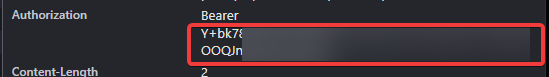

DWA
A single Go binary that exposes the OpenAI and Anthropic chat APIs on top of the DeepSeek web app.
Overview
DWA talks to the unofficial chat.deepseek.com web API and re-exposes it through two standard interfaces:
- OpenAI
POST /v1/chat/completions - Anthropic
POST /v1/messages
Point any OpenAI or Anthropic SDK at http://127.0.0.1:8000 and it works. Streaming and non-streaming are both supported, and the proof-of-work challenge the web app requires is solved locally with the original WASM module.
How it works
Each request fetches a POW challenge and a HIF token in parallel, solves the challenge through sha3_pow.wasm, then streams the completion back and converts it to the format the client asked for. Conversations reuse a cached DeepSeek session so multi-turn chats keep their context.
Requirements
- Go 1.22 or newer
- A DeepSeek account, used only to obtain a session token
Setup: 1. Get your token
The token is the Bearer value the web app sends with each request. It is not a cookie, so you read it from the request headers.
Log in at chat.deepseek.com and send any message.
Open DevTools with F12, go to the Network tab, and click the request named completion.
Under Headers, copy the value after Authorization: Bearer.

Bearer.40003 invalid token, grab a fresh one the same way.
Setup: 2. Configure
Copy the template and paste your token in:
cp .env.example .envThen edit .env:
DEEPSEEK_TOKEN=your_token_here
HOST=127.0.0.1
PORT=8000.env is gitignored, so your token never lands in version control.
Setup: 3. Run
From the project root:
go run .On Windows you can double-click start.bat instead. It builds the binary into bin/ and launches it.
Endpoints
| Method | Path | Format | Notes |
|---|---|---|---|
GET | /v1/models | - | Lists available model IDs |
POST | /v1/chat/completions | OpenAI | Streaming and non-streaming |
POST | /v1/messages | Anthropic | Streaming and non-streaming |
Examples
OpenAI, non-streaming
curl http://127.0.0.1:8000/v1/chat/completions \
-H "Content-Type: application/json" \
-d '{"model":"deepseek-chat","messages":[{"role":"user","content":"Say hi in one word"}]}'{
"id": "chatcmpl-18b4adb1e8094f38",
"object": "chat.completion",
"model": "deepseek-chat",
"choices": [
{
"index": 0,
"message": { "role": "assistant", "content": "Hi" },
"finish_reason": "stop"
}
],
"usage": { "prompt_tokens": 0, "completion_tokens": 0, "total_tokens": 0 }
}OpenAI, streaming
Add "stream": true. Chunks arrive as server-sent events:
data: {"choices":[{"delta":{"content":"1"},"index":0}],"object":"chat.completion.chunk"}
data: {"choices":[{"delta":{"content":" "},"index":0}],"object":"chat.completion.chunk"}
data: {"choices":[{"delta":{"content":"2"},"index":0}],"object":"chat.completion.chunk"}
data: [DONE]Anthropic
curl http://127.0.0.1:8000/v1/messages \
-H "Content-Type: application/json" \
-d '{"model":"deepseek-chat","max_tokens":100,"messages":[{"role":"user","content":"Say hello in one word"}]}'{
"id": "msg_18b4adb4b6943064",
"type": "message",
"role": "assistant",
"model": "deepseek-chat",
"content": [{ "type": "text", "text": "Hello" }],
"stop_reason": "end_turn",
"usage": { "input_tokens": 1, "output_tokens": 1 }
}Configuration
| Variable | Default | Description |
|---|---|---|
DEEPSEEK_TOKEN | (required) | Bearer token from the web app |
HOST | 127.0.0.1 | Bind address |
PORT | 8000 | Bind port |
Flags override the environment:
go run . -host 0.0.0.0 -port 9000Notes and limitations
- This uses an unofficial API, so it can break whenever the web app changes.
- The token is a session token and expires. There is no automatic refresh.
usagetoken counts are placeholders. The web API does not report them.- Tool calls go through a small XML convention and are parsed back out, so behaviour depends on the model following the format.